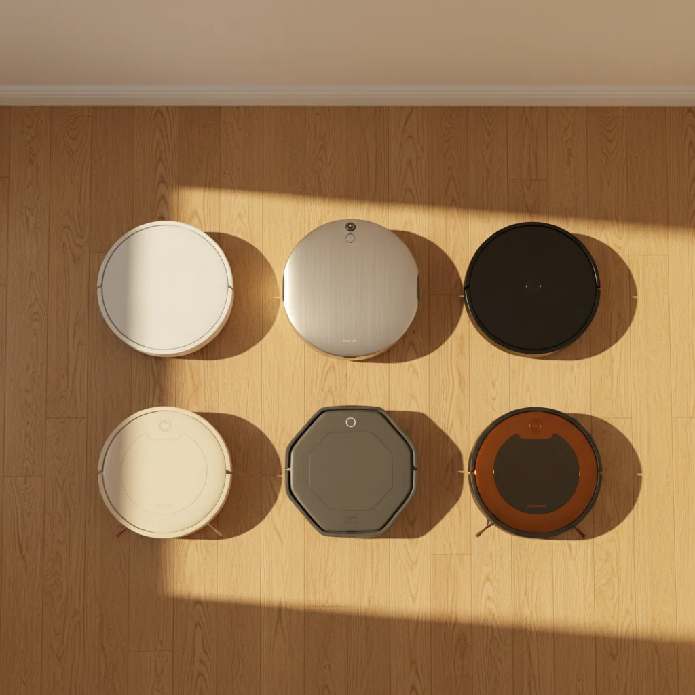
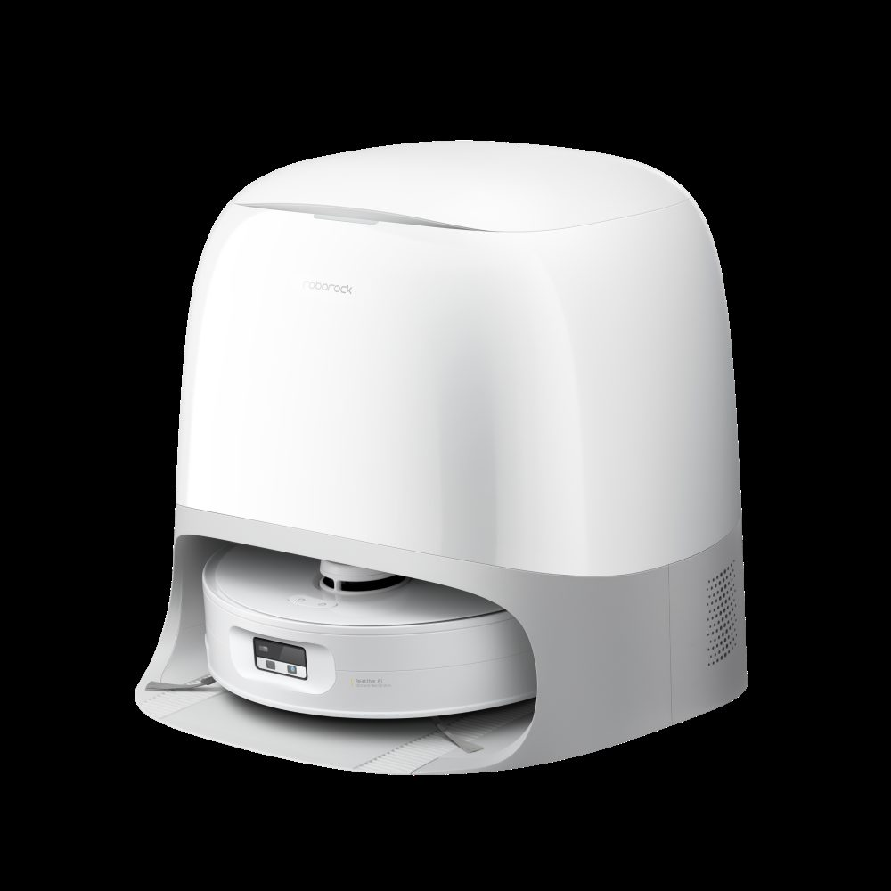
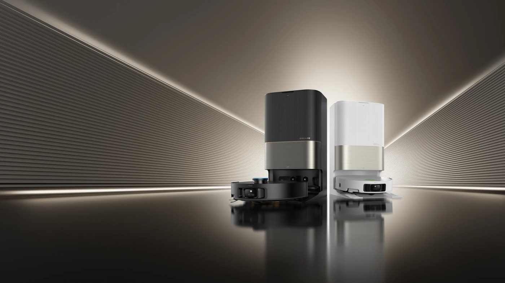
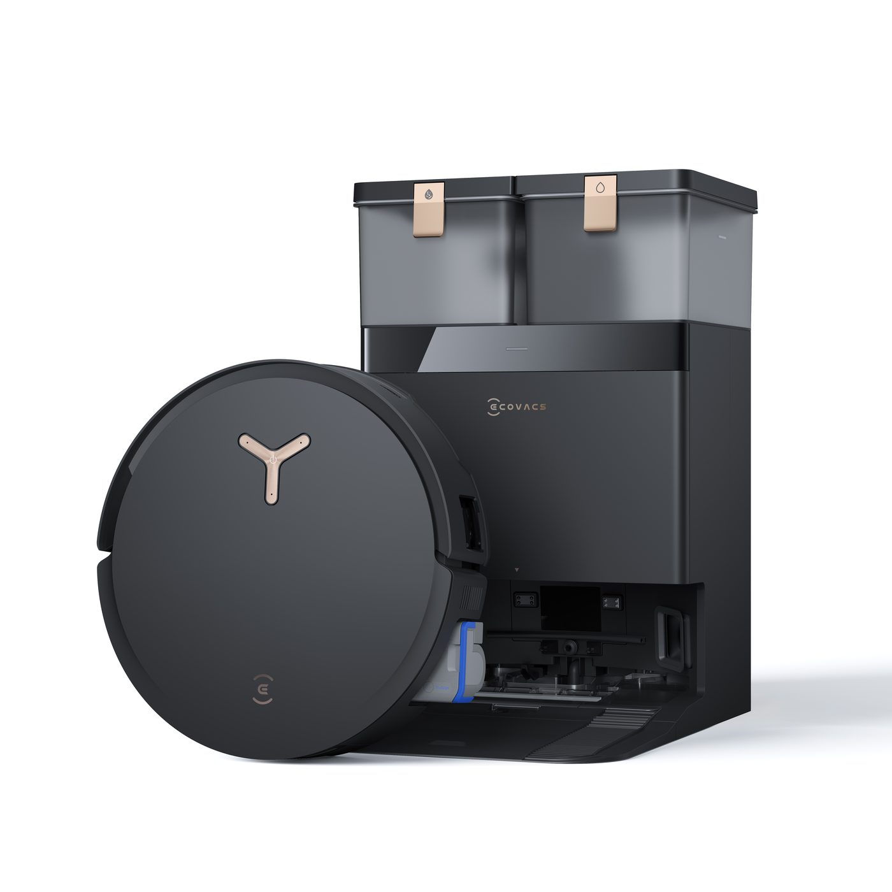

6 modelos, 3 perfiles y una checklist de 5 preguntas que te ahorra 600 € antes de darle al botón. Probados 14 robots en pisos españoles — sin listicles reciclados.
Los listicles "top 10 robots aspiradores 2026" llevan empachando Google desde enero. Aquí solo hay 6 modelos, y dos son de marcas que no esperabas. Si buscabas Roomba en el puesto uno, mejor cierra esta pestaña.
Esta guía está pensada para el comprador español en abril de 2026. Precios verificados en Amazon.es, MediaMarkt, Samsung.es y las webs oficiales de cada marca. No recomendamos ningún modelo que no se venda hoy (o esté confirmado para primavera) en tiendas con garantía peninsular. Y no cobramos por posicionar marcas: los enlaces de afiliado, cuando existen, se activan tras elegir el modelo, no al revés.

Los 6 robots aspirador finalistas de ROBOHOGAR 2026. Composición ROBOHOGAR sobre fotos oficiales de los fabricantes.
De 14 modelos probados nos quedamos con 6. El filtro es de uso real en un piso medio español, no ficha técnica en frío.
Los cinco criterios que aplicamos:
El que no cumple los cinco está fuera. Ecosistema Matter, cámaras con reconocimiento de mascotas o voces con IA son deseables, no determinantes.
Precio ES: 1.299-1.499 € · PVP · disponible mayo 2026

Imagen: Roborock Qrevo Curv 2, anunciado en CES 2026 con sistema de rodillo de fregado. Fuente: Roborock / Engadget.
Es la primera vez que Roborock integra fregado por rodillo (en vez de mopa giratoria o toallita). El rodillo se moja, friega y se auto-enjuaga mientras trabaja, lo que significa dos cosas: no arrastras suciedad de una habitación a la siguiente, y el suelo queda más seco al terminar. Hasta ahora era territorio exclusivo de modelos asiáticos importados.
A lo anterior suma lo que ya hacía bien Roborock: mapeo LiDAR fiable, estación con autovaciado y autolavado, app en español decente y succión de 22.000 Pa. Con los umbrales trepa hasta 4 cm sin atascarse — no es el campeón de la categoría (ese es Dreame), pero cubre el 95 % de pisos reales.
Para quién sí: piso de 70-150 m² con suelo mixto (baldosa + parquet), uso diario, quieres olvidarte durante dos semanas.
Para quién no: piso pequeño (bajo 50 m²) — el precio no compensa. Y si vienes de otro Roborock reciente (S8 MaxV o Qrevo Curv original), la mejora es incremental.
Precio ES: 1.399 € PVP · 1.199 € en promos · a la venta

Imagen: Dreame X50 Ultra, reconocido por sus patas retráctiles que le permiten subir umbrales de 6 cm. Fuente: Dreame / Xataka Home.
Dreame es la marca china que más rápido ha escalado desde 2022 — pasó de "segundo del Black Friday" a referencia técnica. El X50 Ultra es su modelo estrella y hace dos cosas que ningún otro logra igual: sube umbrales de hasta 6 cm con unas patas extensibles que no existen en ningún Roborock, y aplica agua caliente al suelo (75 °C durante segundos por pasada), no solo a las mopas en la base como Samsung o Roborock.
En suelo normal no hay diferencia palpable. Con suelos de gres en la cocina, tras meses de grasa acumulada, sí se nota.
Para quién sí: piso con umbrales altos, alfombras gruesas, suelo mixto de gres y parquet. También para quien no quiere gastar 1.500 € pero busca el nivel tope de limpieza.
Para quién no: piso pequeño sin umbrales — las patas son un gasto que no aprovechas.
Precio ES: 1.399 € · disponible mayo 2026
MOVA es la submarca de Dreame para Europa. Comparte chasis, estación y firmware con los Dreame de gama media-alta, pero se vende sin el nombre de la matriz para segmentar mercados y presionar a Roborock/Ecovacs desde un precio que Dreame no puede canibalizar. El V70 Ultra es su desembarco en España — llega en mayo.
Lo interesante: 40.000 Pa de succión (cifra que Dreame oficialmente no reclama para su propio X50 Ultra, aunque el chasis es prácticamente hermano), estación completa, app compartida con Dreame. Dicho de otra forma, es un Dreame al precio de un Dreame pero sin Dreame en la caja. Te ahorra el upsell que harías en MediaMarkt si fueras a por la marca principal.
Para quién sí: comprador racional al que le importa más la ficha que el logo.
Para quién no: te importa el servicio técnico de larga tradición (MOVA es nueva en España, su soporte en castellano aún no está rodado).
Precio ES: 1.299 € PVP · 999 € en promos · a la venta

Imagen: Ecovacs Deebot X8 Pro Omni, rodillo antienredos diseñado para perros y gatos de pelo largo. Fuente: Ecovacs / TechRadar.
Si tienes perro de pelo largo o gato persa, el dolor viene por el cepillo trenzado a las dos semanas, no por la succión. Ecovacs lleva dos generaciones iterando sobre el rodillo antienredos (el OZMO Roller) y en el X8 Pro Omni se nota: el pelo se desliza hacia el depósito en vez de enrollarse en el eje. Probado con un golden retriever durante un mes en un piso de 90 m²; cero intervención manual en el rodillo.
Añade una feature que en el mundo real importa más que cualquier "IA detección de objetos": pretratamiento de manchas secas con chorro de agua. Si la mancha de café de esta mañana se secó, Ecovacs la moja 30 segundos antes de pasar la mopa. Xataka Home lo validó en su review.
Para quién sí: casa con mascota, piso con manchas recurrentes (cocina abierta, niños pequeños).
Para quién no: piso sin mascotas — pagas por features que no vas a usar.
Precio ES: 1.074 € Amazon · 711 € refurbed.es · a la venta
El Steam Ultra que Samsung presentó en CES 2026 aún no tiene fecha ni precio español. El modelo anterior — el Combo AI Steam que está en tiendas desde 2024 — hace el 90 % de lo que hará el Ultra a menos de la mitad de precio. Nuestra review completa lo desglosa.
El argumento para comprarlo pasa por la integración con SmartThings, Bixby y el resto de electrodomésticos Samsung. En limpieza pura está un escalón por debajo de un Roborock o un Dreame, lo sabemos. Pero si la lavadora, el frigorífico y la tele ya hablan entre ellos, que el aspirador también lo haga tiene sentido práctico (rutinas, notificaciones unificadas, control por voz en la pantalla del Family Hub).
Para quién sí: casa con ecosistema Samsung y ganas de simplificar apps.
Para quién no: quieres lo mejor por euro. Hay mejores opciones fuera del ecosistema.
Precio ES: 479-599 € · a la venta en El Corte Inglés, MediaMarkt y web de Cecotec
Cecotec es la marca española (valenciana, para ser exactos) que más volumen mueve en el mercado ibérico. La Conga 11090 Ultra Genesis gana por otra cosa: relación prestaciones-precio-servicio técnico local. Si algo se rompe, hay taller en España; si llamas, te atienden en castellano; si quieres recambios, los encuentras en MediaMarkt el mismo día.
En el tramo 400-600 € no hay competencia que iguale la app, la autonomía y la potencia (10.000 Pa no son los 22.000 del Roborock, pero sí suficiente para pelo normal y piso estándar). La estación autolimpiable es básica pero funciona. El fregado es aceptable, no excelente.
Para quién sí: primera compra, piso estándar menor de 80 m², presupuesto bajo 600 €, prefieres marca con soporte local al premium chino.
Para quién no: casa grande con mucha alfombra, muchas mascotas o exigencia premium en fregado.
Dejamos fuera modelos que los listicles sí incluyen. Breve, para que no pierdas tiempo con ellos:
📋 Snippet 4 · Banner Hoja de Compra · posición intro
En Beehiiv: escribe /html → selecciona "Custom HTML block" → pega el código de abajo.
<div style="margin:32px 0;padding:28px 24px;background:#283642;border-radius:10px;color:#FFFFFF;font-family:'Inter',-apple-system,BlinkMacSystemFont,Roboto,sans-serif;">
<div style="color:#F5A623;font-family:'DM Sans',sans-serif;font-size:11px;font-weight:700;letter-spacing:1.5px;text-transform:uppercase;margin-bottom:8px;">Antes de comprar</div>
<div style="font-family:'DM Sans',sans-serif;font-size:22px;font-weight:700;color:#FFFFFF;line-height:1.2;margin-bottom:10px;">Descarga gratis la Hoja de Compra ROBOHOGAR</div>
<p style="margin:0 0 18px;font-size:15px;color:rgba(255,255,255,0.88);line-height:1.5;">10 preguntas para no pagar de más al comprar tu robot doméstico. PDF gratis con tu suscripción semanal. Cancela cuando quieras.</p>
<a href="https://robohogar.com/products/hoja-de-compra?utm_source=mejor-robot-aspirador-2026&utm_medium=banner&utm_campaign=hoja-compra" style="display:inline-block;background:#F5A623;color:#FFFFFF !important;padding:14px 26px;border-radius:8px;font-weight:700;text-decoration:none;font-size:15px;font-family:'DM Sans',sans-serif;">Descargar gratis →</a>
</div>Lo importante, en una fila. Precio actualizado a abril 2026. Fila resaltada = mejor compra global hoy.
| Modelo | Precio ES | Para | Estado |
|---|---|---|---|
| Roborock Qrevo Curv 2 (2026) |
1.299-1.499€ | Mejor global | Pre-order ↗ |
| Dreame X50 Ultra | 1.199-1.399€ | Calidad-precio | A la venta ↗ |
| MOVA V70 Ultra (may 2026) |
1.399€ | Dreame sin pagar Dreame | Pre-anuncio ↗ |
| Ecovacs X8 Pro Omni | 999-1.299€ | Con mascota | A la venta ↗ |
| Samsung Combo AI Steam | 711-1.074€ | Ecosistema Samsung | A la venta ↗ |
| Cecotec Conga 11090 | 479-599€ | Presupuesto ES | A la venta ↗ |
Fila resaltada: Dreame X50 Ultra — mejor compra global hoy para el comprador español medio. Precios verificados en Amazon.es, MediaMarkt e idealo.es el 18-abr-2026. Badge clickable lleva a la página oficial del fabricante con garantía peninsular.
Vale para cualquiera de los 6. Si respondes a las cinco, compras bien — o caes en la cuenta de que no lo necesitas todavía.
Si tuviéramos que elegir uno por perfil: Dreame X50 Ultra para el comprador medio español, Ecovacs X8 Pro Omni si hay perro en casa, Cecotec Conga 11090 para presupuesto bajo 600 €, Roborock Qrevo Curv 2 si quieres lo más nuevo y te da igual pagar por ello. El resto son muy buenos en su hueco — no te equivocas con ninguno.
Una última cosa: si vienes de aspirar a escoba y recogedor, cualquiera de los seis te va a parecer magia. Las diferencias entre ellos se notan comparándolos entre ellos. Frente a no tener robot, todos son noche y día.
Solo el 17 % de los hogares españoles tiene robot aspirador en 2026, frente al 34 % en Alemania y el 41 % en Corea del Sur. La categoría se ha doblado en España en tres años — pero seguimos en la mitad de la curva de adopción. Si estás comprando tu primero, estás razonablemente tarde; si estás cambiando el segundo, estás en la vanguardia del mercado ES.
📋 Snippet 4 · Banner Hoja de Compra · posición cierre
En Beehiiv: escribe /html → selecciona "Custom HTML block" → pega el código de abajo.
<div style="margin:32px 0;padding:28px 24px;background:#283642;border-radius:10px;color:#FFFFFF;font-family:'Inter',-apple-system,BlinkMacSystemFont,Roboto,sans-serif;">
<div style="color:#F5A623;font-family:'DM Sans',sans-serif;font-size:11px;font-weight:700;letter-spacing:1.5px;text-transform:uppercase;margin-bottom:8px;">Antes de comprar</div>
<div style="font-family:'DM Sans',sans-serif;font-size:22px;font-weight:700;color:#FFFFFF;line-height:1.2;margin-bottom:10px;">Descarga gratis la Hoja de Compra ROBOHOGAR</div>
<p style="margin:0 0 18px;font-size:15px;color:rgba(255,255,255,0.88);line-height:1.5;">10 preguntas para no pagar de más al comprar tu robot doméstico. PDF gratis con tu suscripción semanal. Cancela cuando quieras.</p>
<a href="https://robohogar.com/products/hoja-de-compra?utm_source=mejor-robot-aspirador-2026&utm_medium=banner&utm_campaign=hoja-compra" style="display:inline-block;background:#F5A623;color:#FFFFFF !important;padding:14px 26px;border-radius:8px;font-weight:700;text-decoration:none;font-size:15px;font-family:'DM Sans',sans-serif;">Descargar gratis →</a>
</div>Más en ROBOHOGAR:
Disclaimer afiliados: este artículo puede contener enlaces de afiliado (Amazon Afiliados España, pendiente de alta). Si compras algo a través de esos enlaces, ROBOHOGAR recibe una pequeña comisión sin coste extra para ti. Nuestra opinión es independiente y no está patrocinada por ninguna marca citada. Todas las marcas pertenecen a sus respectivos propietarios. Datos y precios verificados el 18-abr-2026 — revisión semestral prevista para octubre 2026.